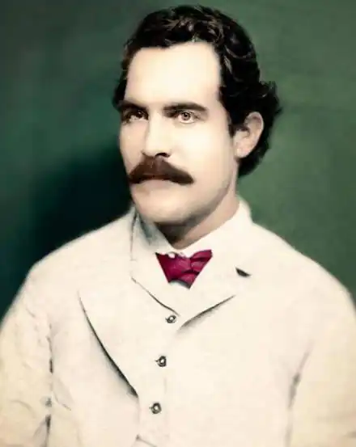
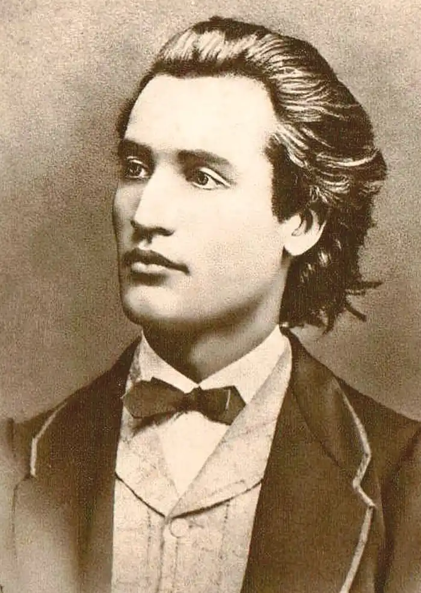
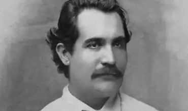
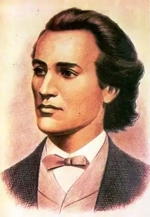

Міхай емінеску в звичайному житті мав прізвище Эмнович. Народився він 15 січня 1850 року в Ботошани. Помер 15 червня 1889 р. в Бухаресті. Поет став гордістю літературної Румунії, його визнали класиком. Після смерті йому присудили звання члена академії наук країни.
Життєвий шлях
В дуже многодетном сімействі народився Міхай Емінеску. Біографія його містить дані про батька, який займався землеробством. Що стосується матері, між нею і сином з найбільш змалку була особлива ніжність і любов. Румунський поет Міхай Емінеску: біографія, творчість, вірші та цікаві факти Багато про неї писав Міхай Емінеску. Вірші, такі як "Мама". відображають всю принадність і близькість їх взаємовідносин. Хлопчик навчався у гімназії в Чернівцях, де викладання велося німецькою мовою. Тоді цей район перебував під керівництвом Австро-Угорщини. Мова на уроках давалося йому насилу. Та й надалі куди більш відомі вірші Міхая Емінеску румунською мовою. Цікаві факти В школі у хлопця з'явилися доброзичливі взаємини з Ароном Пумнулом, який брав участь у революційних діях 1848 року і займався викладанням румунської мови. Саме завдяки йому Міхай Емінеску став патріотом, почерпнувши з навчання багато сильних ідей. Своєму наставнику він присвятив перший вірш. В той момент і починається поетична біографія. Міхай Емінеску румунською висловив свій траур у вірші "Біля могили Арона Пумнула". Його надалі надрукували у виданні "Сльози ліцеїстів". Смислове навантаження твору полягає в заклику до скорботи, яка мала розійтися по всій Буковині, адже помер один з кращих викладачів країни. Публікація першого знаменитого твору, який написав Міхай Емінеску, відбулася в 1866 році. Тоді ж він встиг створити "Розбещення юнаки", після чого в журналі "Родина" були віддані увазі публіки ще кілька його творінь. За творчі досягнення і патріотизм вигляд поета зображено на національній валюті. Банкнота з його портретом "ходить" під номіналом в 500 грошових одиниць. Румунський поет Міхай Емінеску: біографія, творчість, вірші та цікаві факти Зміна місця отримання освіти Навчання в Чернівцях ще не було закінчено, але молодий чоловік змушений покинути гімназію. Він вступив в інше освітній заклад, розташоване у Відні. Це було бажання його батька. Там Міхай Емінеску придбав статус вільний слухач з правом вивчення філології, історії філософії, а також юриспруденції. Тоді його творча діяльність не сповільнюється, а, навпаки, набирає нових обертів. Які вірші писав Міхай Емінеску, стає зрозуміло, якщо ознайомитися з численними творами того часу. Одним з них є чудова поема "Епігони". Румунський поет Міхай Емінеску: біографія, творчість, вірші та цікаві факти Ухил у роздуми З настанням осені 1872 року відбувається його переїзд в Берлін. У стінах цього університету він прослухав лекції, що закінчилися у вересні 1874-го. Він займався переказний діяльністю, працюючи з працями Конфуція і Канта. Патріотичні ідеї захоплювали його розум, пронизуючи творчість. Саме такий характер мають твори "Ангел і Демон", а також "Імператор і пролетар". Завдяки Паризької комуни відбулися докорінні зміни у його мисленні і світовідчуття. Кожна рядок пронизана духом любові до рідного краю. "Що тобі бажаю, солодка Румунія" – тому доказ. Цей вірш вважають одним з кращих творінь автора. Творчий поворот Коли поет переїхав у Берлін, їм була переосмислена сама концепція тим віршів. Від патріотизму Міхай схиляється до любовній ліриці, оспівуючи тонкі і високі почуття в таких творах, як "Блакитна квітка" або "Чезара". Читаючи ці рядки, можна вловити ідею святості і недоторканності справжніх почуттів. Часом, звичайно, це не в'яжеться з побутовими труднощами і реалістичними подіями, які здатні розірвати цю тонку і примарну пелену. Румунський поет Міхай Емінеску: біографія, творчість, вірші та цікаві факти У чому суспільство навіть перекручує священну зв'язок чоловіка і жінки, спрощуючи і опошляя її. Реалізм часто перемагає романтизм, але це зовсім не означає, що про піднесених емоціях потрібно забувати. Людина – складна істота, покликана знаходити баланс між своїми інстинктами, тваринної натурою, прагненням пізнати світ і духовним перевагою. Саме до тонкого і дбайливому відношенню до почуттів закликає Міхай Емінеску. У пошуках коштів У 1874 році поет переїхав до Ясс, де планував заробити грошей. Він знайшов роботу викладача і бібліотекаря в гімназії. Також він бере на себе обов'язки шкільного інспектора. У цей період закінчена поема "Келін". Алегорично тут прославляється єднання з вітчизною. Через деякий час з моменту переїзду поет створював твори, що несуть філософське навантаження. У 1877 році йому надходить запрошення від газети "Час", яку видавала Консервативна партія. Поет перебирається на територію Бухареста. Від цього, звичайно, не стає йому простіше в матеріальному плані, доводиться підробляти додатково. Румунський поет Міхай Емінеску: біографія, творчість, вірші та цікаві факти У той час він створив "Послання", несучі соціальний і філософський посил. Одним з вершин його творчої діяльності можна назвати вірш "Ранкова зірка". Він пронизаний романтичним настроєм і в той же час повний реалізму. Висвітлюється доля генія, якого відкинули. Тут виступає певна образа на те, що його талант був визнаний не в повній мірі при житті. Згасання розуму і світанок кар'єри Цей творець дійсно був генієм, яких мало. Так і його ліричному героєві не вистачило місця для себе на землі. Головною цінністю у рядках цього твору проголошується спокій. Однак його пошуки забирають багато сил на тлі волнующегося і галасливого зовнішнього світу. Від цього виникає втома, про яку можна зрозуміти, вчитавшись у текст вірша. Нотки атеїстичних поглядів присутні у творі "Я не вірю". Однак на тлі цього використовується і демонічний образ в окремому вірші. Поет розглядає світ з різних сторін, робить припущення, розмірковує і дозволяє читачеві думати разом з ним. Життя Емінеску була затьмарена психічною хворобою, яка розвинулася в 1883 році. Лікування дало деякі поліпшення, проте вигнати недуга остаточно так і не вдалося, він переслідував творця до смерті. За життя Михайла віддавали мало данини поваги. Але в цьому ж році встигла вийти єдина книга, видана, поки він був живий. Його визнали і полюбили, він став шанованою людиною, однак сталося це вже занадто пізно. Розум поета був заповнений хворобою. Смерть сталася на ліжку психіатричної лікарні в 1889 році на території Бухареста. Румунський поет Міхай Емінеску: біографія, творчість, вірші та цікаві факти В деякому розумінні шкода, що таких людей помічають після смерті. Однак тим величнішим можна назвати їх подвиг. Адже цей поет міцно дотримувався своїх поглядів, не хитаючись від ударів долі. При всій своїй чуттєвості і творчому погляді на життя, він зберігав у собі вогонь, щоб йти через усі перешкоди. І лише під кінець життя дав слабину і дозволив хвороби побороти себе. Він гідний вічної пам'яті і поваги. Сьогодні його шанують вдячні нащадки.